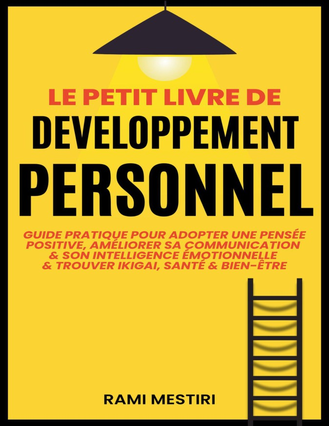

Le Petit Livre de Développement Personnel





Carte d’identité
- Auteur
- Rami Mestiri
- Genre
- Vie et société
- Sous-genre
- Développement personnel
- Éditeur
- Non renseigné
- Parution de l’édition
- Non établie
- ISBN
- Non confirmé
- Langue de l’édition
- Français
- Fichier du site
- PDF · 89 pages
Le fichier ne comporte ni date de parution, ni éditeur, ni ISBN vérifiable.
 Résumé du livreL’essentiel en quelques lignes
Résumé du livreL’essentiel en quelques lignes
Rami Mestiri rassemble des lectures de développement personnel autour de deux questions simples, ce que l’on appelle réussir et ce qui rend la vie satisfaisante. Il présente son modèle d’équilibre BIC, puis propose de l’expérimenter pendant quatre-vingt-dix jours. Le livre se termine par une méthode de suivi personnel.
 Chapitre par chapitre6 entrées
Chapitre par chapitre6 entrées
-
01 Le point de départ du livrePDF p. 4
Mestiri présente sa démarche et la question qui l’a poussé à écrire. Il cherche une manière de réfléchir à sa vie qui puisse se traduire dans les habitudes de tous les jours.
Lire à cette page ↗ -
02 Argent et satisfactionPDF p. 6
L’auteur examine la place de l’argent dans une vie satisfaisante. Il invite à distinguer ce que l’argent rend possible de ce qui donne du sens au quotidien.
Lire à cette page ↗ -
03 Définir sa réussitePDF p. 13
Le livre propose de regarder les objectifs que l’on a adoptés sans vraiment les choisir. Il ramène la question de la réussite à des critères que chacun peut expliciter.
Lire à cette page ↗ -
04 Le modèle des trois piliersPDF p. 20
Mestiri décrit trois piliers : le bien-être, les intérêts que l’on développe et les connexions avec les autres. Il explique comment examiner leur place dans sa vie à l’aide d’exemples et d’exercices.
Lire à cette page ↗ -
05 Se donner quatre-vingt-dix joursPDF p. 72
Le modèle se transforme en programme d’action. L’auteur suggère de choisir des habitudes, d’observer ce qui tient dans la durée et de corriger progressivement sa façon de faire.
Lire à cette page ↗ -
06 Organiser sa démarche personnellePDF p. 82
La dernière partie présente un cadre de suivi qui rassemble les objectifs, les actions et les retours d’expérience. Elle invite à revoir le système quand les priorités changent.
Lire à cette page ↗
Les fils du livre

Les étoiles venues d’ailleurs
Goodreads
Une fiche de ce titreLire les avis sur Goodreads ↗Relevé du 11 novembre 2026
Mon carnet de lecture
Mes étoiles
0 critique
Ma critique sur ce livre ↗